Spawn 机制
Reason: Lead should be simplified.
The following items are, in 基本信息, how enemy 生成 works in 绝地潜兵 2:
- 每个 敌人 in 绝地潜兵 2 has its own Spawn 机械师 that decides on how it is spawned.
- Patrols spawn around 玩家, at a 最小 of 75m away (the "safety bubble") and up to 150m away.
- The game will generate a patrol for each group separated by more than 75m, penalizing split teams.
- 目标 and Enemy 哨站 act as hotspots, with patrol 生成速率 已增加 locally up to 30% in a 150m radius.
- Destroying 哨站 and completing 目标 removes the local hotspot.
- Primary 目标 completion has the biggest impact on patrol 生成速率 (30% more map-wide), and should be kept for last if possible.
- Outpost 摧毁 增加 map-wide patrol 生成速率, between 10% for the first, increasing up to up to 25% for all.
- When available, the 撤离 Point 充当 a 250m-wide hotspot with up to ~6x 已增加 patrol spawns.
- Patrols spawn in the 方向 of the closest active enemy Outpost or the map edge; they are not "generated by 哨站".
- Time spent on 任务, 终端 interaction, and combat do not 增加 patrol 生成速率.
Throughout this 条款 each of these statements will be dug into and explained in detail.
Part 1
What 类型 of enemy spawns are there
- Static spawns. These are the 敌人 placed around 兴趣点, enemy 哨站, and 目标 (both Primary and Sub).
- 增援 spawns. These are the 敌人 that are in Dropships or come out of Bug 突破.
- 构筑者/Nest spawns. These are created from Fabricators/Nests and unless you're detected, it will 通常 just stand near their parent.
- Patrols. Groups of 敌人 that patrol the 行星. It is the 主体 discussion point of this page.
Patrols
A patrol is a group of 敌人 that appear somewhere on the map at set intervals and then walk towards another point on the map. Their path will always have them cross very close or even directly on top of a Player's position at the moment the patrol is spawned. These 敌人 simply appear out of thin air. If you look at a patrol and "Mark" it, your character will 实际上 say, "Enemy Patrol". They are the only 敌人 on the map that will move around without an external influence. Patrols will despawn if any unit in the Patrol gets 175 meters or more away from the nearest player AND are not actively engaged in combat. NOTE: There is a 当前 bug specific to 机器人 where 小型 (Troopers/Raiders) bots will spawn in and then move towards the exact center of the map and then stand there and never despawn. This is not a patrol and we just want to call them out specifically as a bug.
What are Spawn Points and Tick Rate
Our working theory for how the game determines when to spawn a patrol is the following. The server has a "Tick Rate" which is 本质上 the 频率 at which the server updates the Game's State. For sake of simplicity, we'll just assume that the server has a "Tick" every 1 second although the real Tick Rate is almost certainly much faster. Every "Tick" generates an amount of "Spawn Points" which gets put into a bucket. When this bucket reaches a threshold value, a patrol is spawned and the bucket gets emptied. The amount of Spawn Points generated per Tick and/or the Threshold 必需 to spawn a patrol is affected by various factors which we will detail further down.
Establishing our Baseline
In order to do controlled tests against a single variable, we first need to 建立 a "Baseline" 生成速率 in the absence of any other conditions or activities.
We did this by doing the following:
- Have the "核动力雷达" 舰船模块
- Equip an 护甲 with the "Scout" perk
- Equip the UAV 强化资源
- We went into a 任务 at a particular 难度 while Solo
- Located a spot on the map that was not near any 目标, subobjectives or enemy 哨站
- Simply wait while monitoring the map to see when a Patrol is detected and then timing how long it takes for the 下一个 Patrol to appear
- Repeat step 3 多个 times and then 建立 an 平均 from the timings we took
- Once a "Solo" baseline was established we repeated this 流程 for 2 玩家 and 3 玩家 (we didn't have a 4th available for testing) at that same 难度
This 流程 was then repeated at different 难度 levels and on both War Fronts (机器人/终结族)
The following table 详情 the Baselines (in 秒) for a Solo player.
| 难度 | War 正面 | Baseline | War 正面 | Baseline | War 正面 | Baseline |
|---|---|---|---|---|---|---|
| 1 | 机器人 | 192 | 终结族 | Unable due to TCS missions | 光能者 | TBD |
| 2 | 机器人 | 255 | 终结族 | Unable due to TCS missions | 光能者 | TBD |
| 3 | 机器人 | 255 | 终结族 | 174 | 光能者 | TBD |
| 4 | 机器人 | 245 | 终结族 | 174 | 光能者 | TBD |
| 5 | 机器人 | 215 | 终结族 | 155 | 光能者 | TBD |
| 6 | 机器人 | 200 | 终结族 | 136 | 光能者 | TBD |
| 7 | 机器人 | 180 | 终结族 | 125 | 光能者 | TBD |
| 8 | 机器人 | 160 | 终结族 | 113 | 光能者 | TBD |
| 9 | 机器人 | 110 | 终结族 | 99 | 光能者 | TBD |
| 10 | 机器人 | TBD | 终结族 | TBD | 光能者 | TBD |
Additional 玩家 modify these baselines in the following way
- 2 玩家 - Multiply the Baseline by 0.8333
- 3 玩家 - Multiply the Baseline by 0.75
Unfortunately we did not have a 4th player available for testing so cannot 评论 on the 修正 for 4 玩家.
Due to the ease of controlling the conditions, we did most of our testing in Level 4 机器人 missions but we have confirmed that all the behaviors 功能 consistently 无论 难度, Number of 玩家 or War 正面.
What things affect the Spawn Point 世代 or Threshold 必需 to spawn a Patrol?
The following activities either 增加 the Spawn Point 世代 or 减少 the Threshold, each activity has nuance to it and will be covered in detail in its own 章节. The end result of almost all of this is that spawns occur MORE 频繁 than the Baseline. We have not identified ANY action that slows the Spawn Point 世代 beyond it's "Baseline" with 1 exception which is highly situational and that is having a 机器人空投/Breach very close to the time you would have a patrol spawn.
- 玩家 being in proximity of Primary 目标, Secondary 目标, Enemy 哨站 and the 撤离 point
- Clearing out enemy 哨站 (Fabricators/Nests)
- Completing the Primary 目标
- Player Death
These things can stack in a multiplicative fashion and these interactions will be detailed in their own 章节 near the bottom.
The following factors affect the Threshold
- 任务 难度. Harder missions have lower Threshold
- Number of 玩家 in the match. Each additional player 降低 the Threshold
- 机器人 versus 终结族. 机器人 have a higher Threshold than 终结族 含义 终结族 spawn patrols more 频繁
The following have 否 效果
- Time spent in 任务
- Engaging in combat
- 战略配备 使用
- 突破/机器人空投 (with one exception that is detailed further down)
- 星球
- 任务 类型. All of this data only 施加 to "Regular" (ICBM, 破坏 物资, 清除孵化点, etc) missions. We have done 否 testing against Eradication, Blitz or 平民 撤离 missions. These 任务 类型 are almost 不可能 to get clean data and aren't really relevant to this anyways.
- Being in proximity of 兴趣点
- Using Terminals or interacting with 目标 elements such as turning the radar dish or loading 大炮 shells
- Completion of Secondary 目标 (with a caveat that is explained further down)
What are Areas of Influence and Heat 世代
We need to explain a concept that we've termed "Area of Influence". Certain elements in the world create an Area of Influence around them. We have identified the following elements that have this 效果 and each element has some nuance which will be covered later:
- Primary 目标 (IE The ICBM Silo itself)
- Primary Subobjectives (IE ICBM Launch Codes or Reactivate Power 发电机)
- Secondary 目标 - 战略配备 Jammers, Crashed Datapods, 非法 广播 Towers, etc
- Enemy 哨站 (机器人 哨站/终结族 Nests). 轻型 哨站 do NOT have an Area of Influence. Only 中型 and 重型 do.
- 撤离 Point
Being within an Area of Influence creates "Heat" and the 效果 of this Heat is to 增加 the amount of Spawn Points generated per Tick which means more frequent Patrols.
The center of the Area of Influence is the Element's icon on the map. The amount of Heat generated scales based on a Player's 距离 from that center. Within 50 meters, Heat 世代 is at its 最大 value and then it has a "Falloff" that extends out to 150 meters and the 力量 of the Heat 世代 减少 by 1% per 1 meter. For 示例, if you are 100 meters from the Icon, the Heat 世代 will be at 50% 力量. At 75 meters, it's at 75% 力量. At 125 meters, it's at 25% 力量.
Here's an infographic demonstrating the concept
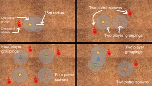
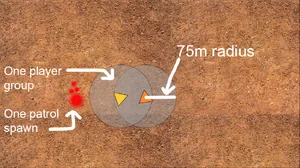
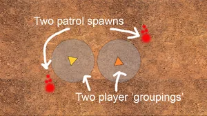
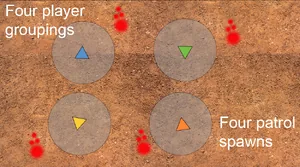
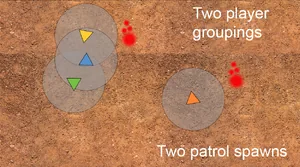
The vast majority of things that generate Heat have a 最大 效果 that 增加 生成速率 by 50%. There are some situations that 增加 it another 10% such as certain Secondary 目标 (探测塔 or 战略配备干扰装置 for 示例) or 重型 哨站.
Areas of Influence do not stack. If you are within overlapping Areas of Influence, only the one with the most Heat 世代 施加.
The amount of Heat is calculated every Tick so as you move closer/further from an element producing Heat, the amount of Spawn Points generated per Tick is constantly changing.
For 示例, using our Baseline of 240 秒, if you spotted a freshly spawned Patrol while outside any area of Influence and then moved towards the center of an Area of Influence and then stayed there, your 下一个 Patrol would spawn between 158 and 240 秒. If you then stayed within the full 力量 Area of Influence, you should expect a Patrol after 158 秒. Finally, if you either left the Area of Influence or stopped its 世代, you would again expect the 下一个 Patrol between 158 and 240 秒. Heat 世代 can be stopped but the conditions under which this occurs is specific to each of the different 类型 of things that are generating it and will be detailed in a 分离 章节.
What are the 效果 of clearing out Enemy 哨站
Enemy 哨站 are a distinct 类型 of map element that comes in 轻型, 中型 and 重型 变体. The number of 哨站 varies from 任务 to 任务 at the same 难度. Destroying these 哨站 will result in a popup message indicating "AREA SECURED" and provide the player with 申购点 Slips and 经验值. Only 中型 and 重型 哨站 生产 an Area of Influence and therefore Heat. 轻型 哨站 have 否 效果 or one that is so 小型 that it is negligible. Destroying 哨站 causes a reduction in the Threshold 必需 to spawn patrols.
You might be thinking, "Destroying 哨站 means MORE 敌人" The only 准确 answer is "Sort of" because the 摧毁 of an Enemy Outpost also removes its Area of Influence from the world. This means that the global 生成速率 might go up but being in those areas of the map 否 longer 增加 your Heat.
Specifics and Numbers on this topic:
- Destroying 哨站 results in a logarithmic 增加 in the 生成速率, from a 0.9 倍率 for the first Outpost up to 0.8 for all Outpost.
- The first outpost you 摧毁 will have the biggest impact, with patrols 生成 ~10% faster. The 类型 (轻型, 中型, 重型) of Outpost does not matter.
- Destroying ALL 哨站 on the map results in patrols 生成 25% faster.
- This Threshold reduction persist for the remainder of the 任务.
As an 示例, on a map with 5 outpost and our baseline of 240 秒: as soon as you 摧毁 the first outpost, you get patrols every 216 秒 (~10% faster). When you 摧毁 the 5th Outpost, you get patrols every 192 秒 (25% faster).
What are the 效果 of completing the Primary 目标
Completion of the Primary 目标 has by far the biggest impact on the 频率 of Enemy Patrol spawns. As soon as you 完成 the Primary 目标, the Threshold gets multiplied by 0.75 含义 you are receiving Patrols 33% more often. Using our Baseline value of 240 秒, this gets 已降低 to 180 秒. Primary 目标 completion also triggers the 撤离 Point hotspot.
What is the 效果 of being near 目标
As discussed above, certain elements on the map 生产 an "Area of Influence" and being inside this generates "Heat" that quickens the 生成速率. The way Primary (Both 主体 and Subobjectives) and Secondary 目标 generate their Area of Influence is kind of 复杂. If a 位置 has static spawns attached to it and the 目标 is in an "Active" state 含义 it hasn't been completed, it will generate Heat as long both these conditions are true:
- The static spawns are still alive
- The 目标 is still active
If either 条件 isn't met, 否 Area of Influence exists. The static spawns that are relevant to this are only the ones in the "主体" area for the 位置 and do not include the spawns in outlying structures.
See these Infographics as an 示例:
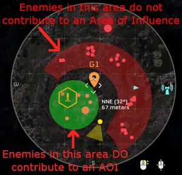
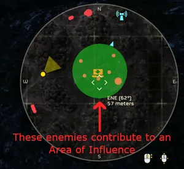
If a 位置 does NOT have static spawns attached to it (for 示例 Crashed Datapod or SEAF 大炮), the 位置 generates an Area of Influence until the 目标 is completed.
However, there exists an exception to these rules and it is best illustrated by the 行为 of 探测器 Towers and 战略配备 Jammers (along with other Secondary 目标).
For 探测器 Towers and 战略配备 Jammers, the 主体 object(s) generating the Area of Influence are the Fabricators in these locations. Once the 构筑者 is destroyed most of the Heat 世代 stops. However, the 探测塔/Jammer itself ALSO generates an Area of Influence with a 小型 Heat coefficient. While the Fabricators create Heat that 增加 the 生成速率 by 50%, the 目标 建筑 itself does so with a 10% 增加. These 效果 合并 multiplicatively. 本质上, if you're going to 攻击 these 目标, the Fabricators should be your first 目标.
What is the 效果 of the 撤离 Point?
The 撤离 Point 充当 a 特殊 hotspot that generates an Area of Influence only when active, ie when the Primary 目标 is completed. 实际上 呼叫中 鹈鹕-1 has 否 效果, the 已增加 生成速率 is simply due to being near the active 撤离 Point. The 撤离 Point generates Heat with a wider radius than other Area of Influences, starting all the way out at 250m and increasing linearly up to 100m from 撤离 Point. The 最大 Heat 倍率 is 0.185 between 0m and 100m, resulting in 5.4x faster patrol spawns.
Note: Some missions have a pre-existing hotspot on 撤离 Point from static spawns. This hotspot seems to generate Heat at a rate similar to other Areas of Influence until the static spawns are cleard. Primary 目标 completion triggers the normal 撤离 Point 行为.
What happens when 玩家 split up?
We need to introduce the concept of a "Player Group". A Player Group can be defined as any set of 玩家 that are 75 meters or closer to at least one other player. A player by themselves is still considered a "Player Group", just with one member. Each Player Group maintains their own Spawn Point bucket and when that Player Group's bucket is filled, it will spawn a Patrol for that Player Group.
For 示例, if 4 玩家 were all over 75 meters away from any other player, you have 本质上 quadrupled the 生成速率 because every Player Group is 生成 their own 分离 Patrol.
This infographic helps demonstrate
Each Player Group can be affected by Areas of Influence independently. One Player Group being in an Area of Influence does not 增加 the Heat for any other Player Group. The modifiers for Outpost 摧毁 and Primary 目标 completion are global and affect all Player Groups.
For 示例, let's consider a match with 2 玩家 in it. If these 玩家 split up and Player 1 entered an Area of Influence but Player 2 did not, Player 1's Spawn Point bucket would 增加 at a faster rate than Player 2's.
The 行为 of what happens when 玩家 split and rejoin repeatedly is very 困难 to test and get clean results for. We are also unsure of the importance (if any) of Host vs Client.
Here is a video demonstrating this 行为 [3]
What about the Unit Composition of Patrols?
Patrols have different "Templates" that they simply randomly choose from when created. These templates are tied to 阵营 and 任务 类型, but not 行星 类型. We have not been able to 识别 any player actions that either 增加 or 减少 the intensity or composition of a Patrol. Number of 玩家 does affect the composition.
What are the 效果 of Player Death?
A player dying in and by itself appears to have 否 效果 but spending a 增援 Point adds a random amount of Spawn Points to the 当前 pool. We tested this extensively by spotting a freshly spawned patrol, immediately killing someone and then reinforcing them and timing how long it took for the 下一个 patrol to appear. There was 否 discernable 涂装 in our results. 有时 it would result in a drastic reduction in time (upwards of 6x faster) and 有时 it seemed to have almost 否 效果 at all.
Our 主体 takeaway here is that Reinforcing dead 玩家 can drastically 速度 up the 下一个 Patrol Spawn. We have 否 way to 识别 if spending more 增援 points within a single spawn 循环 has any 效果 given the random nature of it.
We never observed the 下一个 spawn being slower than expected, it was either faster or on time.
What are the 效果 of 机器人空投/突破
It appears that triggering a 机器人空投/Breach can introduce a short delay before the 生成 of the 下一个 patrol. This delay only occurs if you're close to the 下一个 patrol 生成.
Specifics and Examples
The longest amount of delay that can occur is ~1/6th of the Baseline value and this only occurs if you are in the last 5/6th of the 当前 spawn 循环.
For 示例, if I engaged a freshly spawned Patrol and this patrol called for 增援, the 下一个 Patrol will spawn exactly on time as the call happened too early in the spawn 循环. Using our Baseline of 240 秒 per Patrol, if I engaged some units that call for 增援 195 秒 into the 当前 spawn 循环 (or 81.25%), it will have 否 效果 on the timing of the 当前 Patrol 循环. However, if I were to trigger a 增援 call at 235 秒, the 当前 spawn 循环 will get delayed by ~40 秒. The timing of the 下一个 循环 is not affected and will arrive after 240 秒 barring any other factors.
What is the impact of Time?
Verifying whether or not Time in and by itself had an impact on 生成速率 was the first thing we did as we would need to 账户 for it going forward. As we discovered each new 机械师, we then retested that 机械师 against Time to see if it was affected. We discovered that Time has 否 impact on anything 相关 to Patrols.
Does it impact the Baseline? 否
Does it impact Heat 世代 or Areas of Influence? 否
Does it change the impact of completing the Primary 目标 否
Does it alter the intensity or composition of Patrols? Not that we can tell but this one is 困难 to lock down due to Patrol composition being randomized.
This video shows a Baseline Test and also demonstrates that Time has 否 impact [4]
How do these all systems interact and 合并 with each other?
The following factors 合并 in a multiplicative fashion:
- Primary 目标 Completion
- Area of Influence Heat
- Outpost 摧毁's 效果
Note: this is not longer the case as of 补丁 1.001.104, but the behavor 遗骸 close enough that this 遗骸 a useful approximation for 玩家.
Some examples:
- If a solo player was in a Level 4 机器人 任务, they have a Baseline time of 240 秒.
- If they 摧毁 all the Enemy 哨站, their baseline time shifts down to 192 秒.
- If they then 完成 the Primary 目标, their baseline time shifts down to 144 秒.
- If they then enter an Area of Influence at full 力量 (such as a Secondary 目标 with a spawner), they will 接收 a patrol every 65 秒.
If a Duo was in a Level 4 机器人 任务, they have a Baseline time of 200 秒.
- They don't 摧毁 any enemy 哨站 so there is 否 效果 to their time from 哨站.
- If they 完成 the Primary 目标 their baseline time shifts down to 150 秒.
- If they then enter an Area of Influence at full 力量 (such as 撤离), they will 接收 a patrol every 68 秒.
- If these 玩家 also destroyed at least one Outpost and were at 撤离, they will 接收 a patrol every 25 秒.
If a solo player was in a Level 9 机器人 任务, they have a Baseline time of 110 秒.
- If they 摧毁 all the Enemy 哨站, their baseline time shifts down to 88 秒.
- If they then 完成 the Primary 目标, their baseline time shifts down to 66 秒.
- If they then enter an Area of Influence at full 力量 (such as a Secondary 目标 with a spawner), they will 接收 a patrol every 30 秒.
When we consider that these Patrol Spawns can be duplicated if 玩家 are split into 分离 Player Groups, you can easily have an 有效 生成 速度 that is less than 10 秒.
When we also consider that even a single death can drastically 缩短 the time to the 下一个 patrol, it's 容易 to see how 玩家 get stuck in a "Death Spiral".
What is the impact of the "定位混淆" 强化资源
As of 3/14/24, the 定位混淆 强化资源 has 否 效果 on the Baseline times or any of the 机制 described. It appears to not have any 效果 on Patrols whatsoever.
定位混淆 增加 the time between calls for 增援 (机器人空投/突破). It does not delay the time for a particular enemy to call, it just lengthens the time before another call can occur.
Rough Testing on this looks to be a ~10% 增加 but getting a clean stable baseline on this is 困难 due to relying on AI 行为.
Final note regarding 人口 Cap
It is 困难 to determine 困难 numbers on this but there does exist a global "人口 Cap" that will prevent the 生成 of additional Patrols. If too many enemy units are active in the world, 否 patrols will be created until some 敌人 are killed or despawned.
Show me the 证据
We understand that we're making some major claims about the game 机制 here so we made a video demonstrating the concepts in action.
Testing the various factors that alter the 生成速率 [5]
Part 2
Where do Patrols spawn?
In Part 1, we know we made huge claims about the game 机制 and Luch's summary video contains our real-time manipulation of the system to 生产 predicated outcomes. Here is the demonstration u/Psyker101 (Luchs on Youtube) has put together a video summary for those that prefer a TLDR version. This video also contains our 证据 and real-time demonstration of us actively manipulating the 机制 detailed below. [6]
Key Points
Each of the following topics will be detailed in its own 章节 but here are the broad takeaways[7]
- Patrols will always attempt to spawn 125 meters away from their associated player
- Patrols will always be orientated towards an active enemy Outpost which is randomly selected among all active 哨站
- If 否 eligible 哨站 remain Patrol spawns will be orientated towards the nearest Map Edge
- Patrols can be completely blocked from 生成 in certain circumstances and the system can be manipulated to virtually guarantee Extractions without 敌人
Player Safety Bubble
First we need to explain the concept of the “Player Safety Bubble”. Each player on the map generates an area around them which prevents a Patrol from being spawned within this area. The 困难 射程 of this bubble is around 85 meters 含义 you are virtually guaranteed to not have a Patrol spawn within 85 meters of any player.
Patrols will attempt to spawn at exactly 125 meters from their associated player but this 距离 can have variance depending on 地形. You will almost always see spawns between 90-140 meters. We 请参阅 this area as the "Eligible Spawn Space".
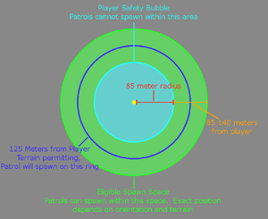
Prior to 补丁 1.000.103, we believe that when a Patrol spawned it failed to 账户 for the Safety Bubble of 玩家 other than the one it was associated with. This led to the 臭名昭著 “生成 on top of me” 问题. Furthermore, it appears that the Safety Bubble 射程 was substantially 已增加 with 补丁 1.000.103.
With 补丁 1.000.103, all Player's Safety Bubbles are considered when attempting to spawn a Patrol. This new logic also allows 玩家 to "chain" their Safety Bubbles together.
What determines where a Patrol spawns?
Patrols are always oriented towards an active enemy Outpost if possible and if that is not possible, they orient towards the nearest map edge. The size of the Outpost does not matter. 轻型, 中型, and 重型 can all be chosen to orient towards and there appears to be 否 “重量” associated with an Outpost’s size, they are treated as equal.
When a patrol spawns, it takes a slice out of the Eligible Spawn Space that is oriented towards the chosen Outpost or Map Edge. Then it attempts to find a valid spot exactly 125 meters from the player anywhere within that sliced Eligible Spawn Space. If a valid space doesn't exist at 125m, it shifts it around 地形 until a space is found. This is why you 有时 get Patrols a bit closer or a bit further than 125m.
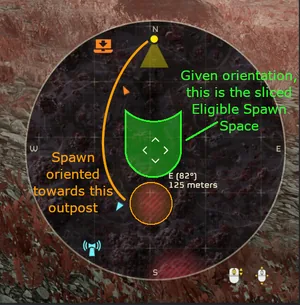
Which Outpost is chosen for a particular Patrol spawn appears to be entirely random. You could have 多个 consecutive Patrols all orientated towards the same base or it could shift dramatically each 循环.
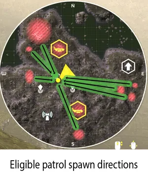
If a player is sufficiently close to an active Outpost such that their Safety Bubble overlaps the Base's center (Icon on the map), that Outpost is rendered ineligible for that Player Group until that player moves sufficiently far away again. In this event, a different outpost will be used for the Patrol’s 生成 position or if 否 other 哨站 exist, the nearest point on the map edge will be used.
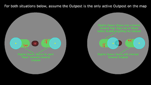
If all the 哨站 on a map are destroyed, Patrols will always spawn orientated towards the closest point on the map edge.
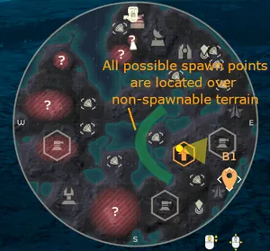
Spawn Blocking
Once all 哨站 have been destroyed the only eligible spawn space is the nearest point on the map edge. 玩家 can leverage this situation by moving to 65 meters or closer to the map edge. Doing so causes the Map Edge Oriented Eligible Spawn Space to be fully engulfed by the Player’s Safety Bubble and 否 Patrols can spawn. So long as the player stays within 65 meters of the map edge, they can move anywhere around the map without any Patrols 生成.
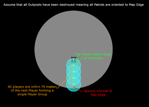
This can also be leveraged during 撤离 to completely block Patrols from 生成 which means you have an 撤离 with absolutely 否 敌人 threatening you. Even with an 撤离 that is somewhat far from the map edge, if you can stay within 75 meters of the 下一个 player in the Safety Bubble Chain, you can reach out to the map edge and block the spawns.
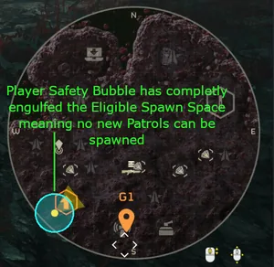
Edge Cases with Spawn Blocking
It is also possible to Spawn Block on certain maps without destroying all 哨站 but it is 极其 地形 dependent. 本质上, so long as the Eligible Spawn Space for 敌人 is entirely located in areas they aren’t allowed to spawn on, such as deep water, 否 敌人 will spawn. The game does not fallback to Map Edge Oriented 生成 in this case, it just fails outright.
Actively manipulating the game state to 达成 this is quite 困难 but we want to call out that Spawn Blocking can occur without destroying all the 哨站 or being near a Map Edge.
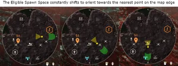
How does all of this work with Split Player Groups?
If 玩家 are split enough to form their own Player Group, each Player Group's Patrol will orient itself independent of other Player Groups. If one Player Group is in a position that blocks their Spawns or makes an Outpost ineligible, it does not prevent Spawn orientation for other Player Groups from that Outpost.
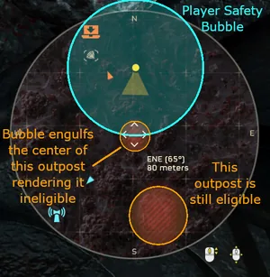
备注
- All tests were performed on PC and we have 否 results or information regarding PS5 or PC to PS5 crossplay.
- 3/19 更新: Summary video put together by one of the testers (u/LexLocatelli)[8]
- Initial testing done on 补丁 1.000.101.
- 3/20 更新: Retested and confirmed 行为 on 补丁 1.000.103, 否 变更 occurred
- 4/2 更新: Retested and confirmed 行为 on 补丁 1.000.200, 否 变更 occurred
- Note from Authors: We hope that Arrowhead will approach this topic in a different way going forward as it is incredibly 容易 to Spawn Block right now and 玩家 can even 经验值 it unintentionally. We are not spreading this information to 鼓励 exploiting the 机制, we are simply informing 玩家 about why things are happening. As part of this post, we are submitting an 官员 bug report to Arrowhead along with our 证据 so that they can 地址 the issue. We all love 绝地潜兵 2 and want to see it be as good a game as possible.
This page needs to be populated from these sources:
参考
- ↑ https://www.reddit.com/r/绝地潜兵/comments/1bdudf3/lets_talk_about_patrols_an_in_depth_analysis_of/
- ↑ https://www.reddit.com/r/绝地潜兵/comments/1gbepyy/lets_talk_about_patrols_part_3_补丁_1001104/
- ↑ https://www.youtube.com/watch?v=7MFB-Cp_Joc
- ↑ https://www.youtube.com/watch?v=BD9Q0QWdSes
- ↑ https://www.youtube.com/watch?v=bEcPBW9EGg4
- ↑ https://www.youtube.com/watch?v=iFWIrA062Mk
- ↑ https://www.reddit.com/r/绝地潜兵/comments/1bsdy3u/lets_talk_about_patrols_part_2_an_in_depth/
- ↑ https://www.youtube.com/watch?v=Zp8xuf_dLDw
- ↑ https://www.destructoid.com/绝地潜兵-2-theorists-dig-into-how-patrol-spawns-work/
- ↑ https://www.zleague.gg/theportal/绝地潜兵-should-destroying-nests-and-fabricators-减少-enemy-spawns/